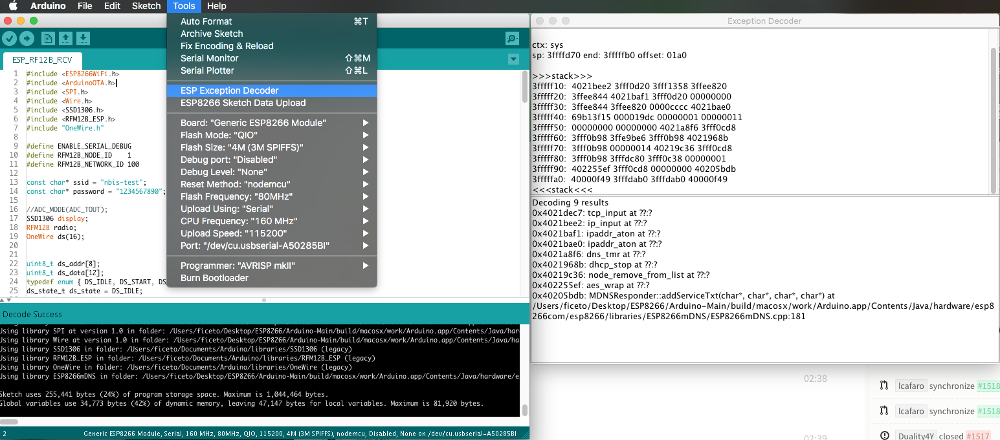

If the ESP crash the Exception Cause will be shown and the current stack will be dumped.
example:
Exception (0): epc1=0x402103f4 epc2=0x00000000 epc3=0x00000000 excvaddr=0x00000000 depc=0x00000000
ctx: sys
sp: 3ffffc10 end: 3fffffb0 offset: 01a0
>>>stack>>>
3ffffdb0: 40223e00 3fff6f50 00000010 60000600
3ffffdc0: 00000001 4021f774 3fffc250 4000050c
3ffffdd0: 400043d5 00000030 00000016 ffffffff
3ffffde0: 400044ab 3fffc718 3ffffed0 08000000
3ffffdf0: 60000200 08000000 00000003 00000000
3ffffe00: 0000ffff 00000001 04000002 003fd000
3ffffe10: 3fff7188 000003fd 3fff2564 00000030
3ffffe20: 40101709 00000008 00000008 00000020
3ffffe30: c1948db3 394c5e70 7f2060f2 c6ba0c87
3ffffe40: 3fff7058 00000001 40238d41 3fff6ff0
3ffffe50: 3fff6f50 00000010 60000600 00000020
3ffffe60: 402301a8 3fff7098 3fff7014 40238c77
3ffffe70: 4022fb6c 40230ebe 3fff1a5b 3fff6f00
3ffffe80: 3ffffec8 00000010 40231061 3fff0f90
3ffffe90: 3fff6848 3ffed0c0 60000600 3fff6ae0
3ffffea0: 3fff0f90 3fff0f90 3fff6848 3fff6d40
3ffffeb0: 3fff28e8 40101233 d634fe1a fffeffff
3ffffec0: 00000001 00000000 4022d5d6 3fff6848
3ffffed0: 00000002 4000410f 3fff2394 3fff6848
3ffffee0: 3fffc718 40004a3c 000003fd 3fff7188
3ffffef0: 3fffc718 40101510 00000378 3fff1a5b
3fffff00: 000003fd 4021d2e7 00000378 000003ff
3fffff10: 00001000 4021d37d 3fff2564 000003ff
3fffff20: 000003fd 60000600 003fd000 3fff2564
3fffff30: ffffff00 55aa55aa 00000312 0000001c
3fffff40: 0000001c 0000008a 0000006d 000003ff
3fffff50: 4021d224 3ffecf90 00000000 3ffed0c0
3fffff60: 00000001 4021c2e9 00000003 3fff1238
3fffff70: 4021c071 3ffecf84 3ffecf30 0026a2b0
3fffff80: 4021c0b6 3fffdab0 00000000 3fffdcb0
3fffff90: 3ffecf40 3fffdab0 00000000 3fffdcc0
3fffffa0: 40000f49 40000f49 3fffdab0 40000f49
<<<stack<<<
the first number after Exception gives the cause of the reset.
a full ist of all causes can be found here
the hex after are the stack dump.
it's possible to decode the Stack to readable information. more info see Esp Exception Decoder tool
